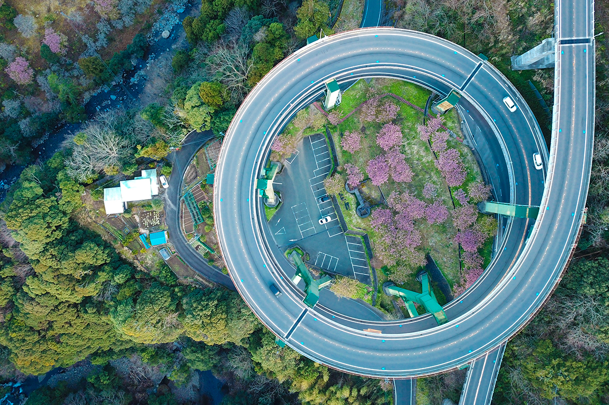

Префектура Сидзуока · Кавадзу · дорога
Мост-петля Кавадзу Нанадару: двойная спираль среди гор Идзу

В горах полуострова Идзу национальная дорога 414 закручивается в двойную петлю с перепадом высот 45 метров. Ехать по ней можно в любое время года, бесплатно и круглые сутки.
Дорога
Два витка над долиной
В Японии есть всё, от субарктического севера до субтропического юга, и дороги ведут через самые разные пейзажи. Отдельная радость для путешественника за рулём это мосты, в которых видна инженерная мысль. Один из самых необычных стоит в префектуре Сидзуока.
Кавадзу, небольшой город на юго-востоке полуострова Идзу, известен своими водопадами и ранней сакурой. Здесь национальная дорога 414 переходит в мост-петлю Кавадзу Нанадару: два витка, один над другим, общей длиной 1064 метра. Перепад высот между началом и концом петли составляет 45 метров, и машина преодолевает его, описывая спираль. Такого ощущения от поездки больше нигде не найти.
Сезоны
Когда ехать
Вид с моста меняется вместе с горами вокруг. Ранней весной склоны украшают нежные цветы ранней сакуры кавадзу-дзакура, летом их заливает свежая зелень, осенью листва краснеет и желтеет. Лучшее время для поездки, на наш взгляд, весна.
Увидеть этот вид несложно: по нашей шкале сложности у него одна звезда из трёх. Плата за проезд не взимается, дорога открыта весь год и круглые сутки.
Рядом
Что посмотреть и попробовать
После петли стоит задержаться в окрестностях. Поблизости каскад водопадов Кавадзу Нанадару, чьё имя носит мост, и старый тоннель Амаги. Из местной еды рекомендуем васаби-дон, рис с тёртым васаби.
Мост-петля Кавадзу Нанадару
- Адрес
- префектура Сидзуока, уезд Камо, Кавадзу, национальная дорога 414
- Телефон
- +81 558-32-0290 (туристическая ассоциация Кавадзу)
- Часы работы
- круглосуточно, круглый год
- Цены / Вход
- бесплатно
- Как добраться
- около 1 часа 20 минут на машине от съезда Нумадзу скоростной дороги Томэй
- Сайт
- kawazu-onsen.com